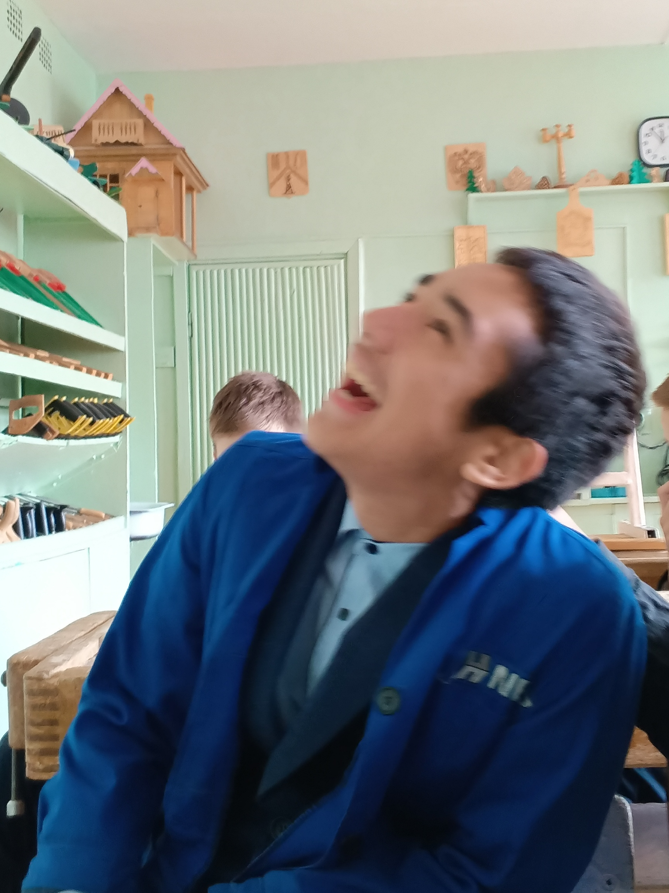
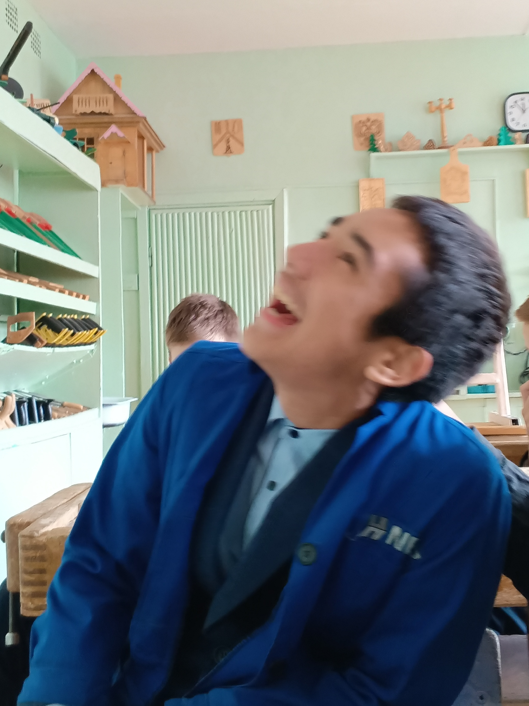

История Ильяса
Ильяс – человек, чья жизнь и работа тесно связаны с африканским наследием. Родившись в семье, которая хранила традиции своих предков, он с детства впитывал культурные ценности Африки. Африка – это не просто континент, это символ силы, единства и духа свободы.
Вдохновленный великими африканскими лидерами, такими как Нельсон Мандела и Томас Санкара, Ильяс посвятил свою жизнь продвижению африканской культуры и истории. Он верит, что африканские корни – это не просто прошлое, но и фундамент для будущих поколений.

 
